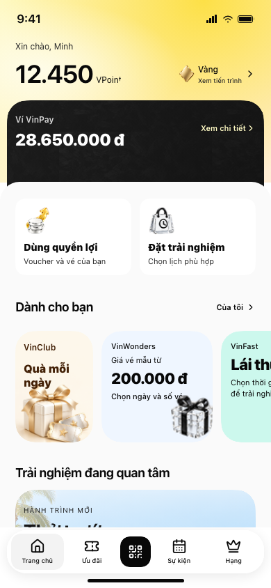
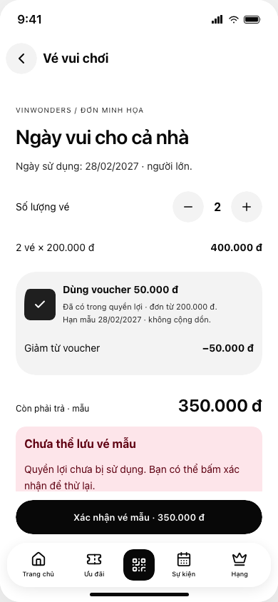

Khách thấy mình có gì, có thứ muốn chạm thử, rồi dùng được quyền lợi hoặc gửi được nhu cầu. V5 giữ hướng source đã chọn và hoàn thiện các đoạn còn đứt.
47/47 kiểm tra tự động đạt Human UT chưa chạy Prototype · không thanh toán / gửi lead thậtKhuyến nghị: ưu tiên vòng B — quyền lợi hiện hữu → giá cuối minh bạch → giao dịch tìm lại được. Giữ A để kiểm tra động lực nhận và dùng quà; C để kiểm tra ý định trải nghiệm và lịch chờ tiếp nhận. Đây là ba hoàn cảnh của cùng IA, chưa phải ba phương án đã có dữ liệu thắng / thua.
Đã làm trong V5: sửa nhãn sản phẩm, entry quà bấm được, cấp một lần trong phiên, voucher áp dụng vào đơn, vé / yêu cầu có nơi tìm lại, giữ nhịp visual nguồn. Chưa làm: ngân sách thật, tồn vé, thanh toán, phát vé hoặc API lead P&L.
38px là không gian dự trữ: container ví option2 ≈199px, cover vẫn≈237px. V5 giữ overlap, không nói ví gốc đã thu nhỏ toàn bộ.
Archive không đồng nghĩa user bác bỏ: có skin, composition và ghi chú tác giả; không gán lý do chọn/bỏ khi chưa có quyết định.
Cấu hình không đồng nghĩa render: tham số iframe khác default/confirmed; CSS cuối ghi đè products3. Baseline normal click story bị thẻ bên cạnh chặn trong môi trường kiểm tra; V5 đã kiểm tra pointer bình thường.
Ảnh, phép đo và giới hạn: UX evidence.
| Khối / vai trò | Quan sát nguồn | Quyết định | Đánh đổi / kiểm chứng |
|---|---|---|---|
| Tài sản: hạng, VPoint, ví Nhận biết tôi có gì; mở quản lý khi cần | 12.450 VPoint, hạng Vàng và ví 28.650.000 ₫ đứng đầu; wallet cover 237px trong container199px. | Giữ số dư/hạng và đích quản lý; kiểm tra overlap/legibility trước khi thu gọn thêm; không lấy cover199 làm thông số. | Thu gọn quá mức giảm nhận diện ví; UT đọc số dư và tìm lịch sử. |
| Dịch vụ Chọn việc cần làm nhanh | Hai card generic Product1/2, Tích lũy linh hoạt/Chi tiêu linh hoạt; icon-title-description cuối cascade. | Dùng hai card cho hai lựa chọn có tên/đầu ra rõ; số lượng lớn chuyển grid có Xem thêm. Không tăng số ô chỉ để lấp Home. | Card lớn chiếm chỗ ưu đãi; UT chọn đúng dịch vụ và kể lại sẽ nhận gì. |
| Ưu đãi Khám phá lời đề nghị, khác với tài sản đã sở hữu | Rail Dành cho bạn + Xem tất cả, nhiều thương hiệu; chạm dispatch offers chung. | Giữ rail để gợi ý, Xem tất cả cho tìm kiếm/so sánh; card mở đúng đề nghị và điều kiện thay vì chỉ mở catalog chung. Tách Đã lưu/của tôi khỏi đề nghị khám phá. | Nội dung ngoài màn dễ bị bỏ qua; thử tìm thương hiệu thứ4 và tìm lại voucher sau lưu. |
| Quà mỗi ngày Lời mời nhẹ, mở sâu khi có quan tâm | Story là item đầu rail112×160 tại y483; mở viewer bốn bước, scratch ở bước1. Normal pointer entry failed: adjacent Vinmec background intercepted click; four-step viewer is source behavior, not passed interaction. | Fix pointer hit area/stacking before validating normal story opening. Giữ entry nhỏ; hiển thị trạng thái đã nhận và đích Quà của tôi sau nhận. Thưởng/điều kiện chỉ hiện khi có thật. | Thêm bước trước quà; cần kiểm tra khách hiểu thưởng/điều kiện và đi tiếp đâu. |
| Trải nghiệm Hình dung chuyến đi hoặc dịch vụ đáng tham gia | Hai ảnh lớn Lái thử VinFast/Đến với Đảo Ngọc; rail bắt đầu y713. | Giữ ảnh lớn có chọn lọc; kèm giá hoặc nguyên tắc báo giá, điều kiện, địa điểm và bước tiếp rõ. Với tác vụ đặt cụ thể dùng list/lọc ở tầng sau. | Ảnh chiếm chiều cao và chưa chứng minh nhu cầu; UT tìm điều kiện và phân biệt xem thông tin/gửi yêu cầu/đã đặt. |
| Điều hướng và hoạt động Tìm lại tài sản, yêu cầu và hỗ trợ | Bottom Trang chủ/Ưu đãi/Sự kiện/Hạng; Home không có CTA cam kết đơn nhất. | Giữ bottom ổn định; đặt trạng thái đã lưu/đang xử lý ở đúng hub; chỉ thêm CTA cố định trong flow có một cam kết. | Thêm hub có thể tăng lựa chọn; UT quay lại tìm tài sản sau rời màn. |
Chuyển tình huống bằng panel là thao tác nghiên cứu, chưa phải cá nhân hóa tự động. Nhãn giả lập nằm trong UI vì cần tránh hiểu là thanh toán / cấp vé / giữ lịch thật.
Ai dùng: Chưa định mua, muốn xem mình nhận được gì.
Hành trình: Story nhỏ → nhận voucher mẫu → xem điều kiện → dùng vào vé → tìm lại.
Layout: Giữ entry nhỏ trong rail; phần thưởng không chiếm cả Home.
Đánh đổi: Thêm bước trước mua; cần ngân sách và cơ chế cấp một lần.
Bấm thử tình huống daily ↗
Ai dùng: Có voucher, muốn mua vé cho gia đình.
Hành trình: Voucher sẵn có → 2 vé → áp dụng giảm → tổng tiền → vé của tôi.
Layout: Đưa tài sản đủ điều kiện lên đầu rail, tổng tiền hiện ngay khi chọn.
Đánh đổi: Chỉ phù hợp khách có nhu cầu; chưa có tích hợp vé / thanh toán.
Bấm thử tình huống spend ↗
Ai dùng: Đang cân nhắc xe, chưa quyết định mua.
Hành trình: Ảnh lớn → ngày / giờ → consent → yêu cầu chờ xác nhận → tìm lại.
Layout: Giữ ảnh để hình dung, đưa form và điều kiện ở bước sau.
Đánh đổi: Chưa có showroom / nguồn lịch / đơn vị tiếp nhận thật.
Bấm thử tình huống experience ↗



Vàng tạo nhận diện vùng thành viên; carbon phân biệt tài sản tiền; paper sáng giữ vùng thao tác dễ đọc. Màu pastel phân biệt lời đề nghị, không dùng một skin phủ mọi khối.
Số điểm / số dư đọc nhanh; sản phẩm có tên tác vụ; offer nổi giá trị; ảnh lớn dành cho việc hình dung. Dùng lại icon/ảnh từ source. Named radius14/28 và smooth60%; trục chữ cấp màn hình22px.
Nhấn nhẹ card, phản hồi nhận quà, áp dụng voucher thay giá ngay, success nói đúng trạng thái. Có reduced motion. Dock giữ QR nổi bật; không thêm CTA primary toàn Home.
Triết lý thiết kế rút từ quyết định: Cho khách thấy giá trị đang có, tạo lời mời vừa đủ và giữ rõ bước tiếp theo.
“Thấy” bằng số / tài sản rõ; “muốn chạm” bằng story / ảnh; “dùng được” bằng điều kiện / giá cuối / đích kết quả. Đây là nguyên tắc triển khai, chưa phải claim tăng dopamine hay conversion.
Giá và voucher là dữ liệu mẫu. Đơn vị bán hưởng tiền dịch vụ; bên tài trợ chịu chi phí giảm giá; phần nền tảng chỉ xác định khi có hợp đồng và đối soát. Không tự đặt phí để chứng minh phương án có lãi.
| Nhánh / giá trị khách | Khi nào tạo giá trị kinh tế | Phần nền tảng | Điều kiện / rào chắn |
|---|---|---|---|
| DAILY Biết mình có gì, nhận quyền lợi phù hợp và dùng được ngay thay vì chỉ sưu tập vật phẩm. | Sự kiện tạo giá trị là quyền lợi được sử dụng có xác nhận hoặc giao dịch mục tiêu hoàn tất; mở story và cào xong chỉ là tương tác. | Không có doanh thu trực tiếp được chứng minh từ nhận quà. Giá trị kỳ vọng là giao dịch tăng thêm và dùng chéo P&L; chỉ tính phí hay phần hưởng khi hợp đồng và đối soát xác nhận. Mua/nạp VPoint và số dư ví không tự là doanh thu nền tảng. | Không mặc định tặng mỗi ngày vô hạn. Chỉ hiện quà có chủ ngân sách, tồn, điều kiện, hạn và đường dùng; ngừng cấp khi hết hạn mức. Không lấy DAU hoặc lượt cào làm chứng cứ có lãi. |
| SPEND Chọn ưu đãi đúng nhu cầu và thương hiệu, biết số tiền thực trả, nơi hoàn tất và cách dùng VPoint. | Giao dịch hợp lệ sau hủy/hoàn và xác nhận sử dụng ưu đãi; với đối tác ngoài cần attribution và kết quả chuyển đổi được đối tác xác nhận. | Doanh số P&L và GMV phải báo cáo riêng với doanh thu/phần hưởng VinClub hoặc VinPay. B3 nêu mô hình giới thiệu hưởng hoa hồng ngoài HST nhưng chưa có biểu phí hay đối tác ký kết. Phí thanh toán cũng chưa được chứng minh; thanh toán qua ví không tự tạo doanh thu phí. | Không nhầm trợ giá với cầu tăng thêm: khách vốn sẽ mua vẫn có thể nhận giảm giá. Chỉ mở thương hiệu có nguồn cung và xác nhận dùng; không hứa checkout thống nhất khi giao dịch kết thúc ở đối tác. |
| EXPERIENCE Khám phá xe, nhà hoặc kỳ nghỉ để hiểu lựa chọn, rồi chủ động đăng ký tư vấn/lịch trải nghiệm phù hợp. | Lead được P&L chấp nhận đủ chuẩn và lịch hẹn được xác nhận là giá trị vận hành ban đầu; tham dự và giao dịch là kết quả sau đó. Chỉ có sự kiện tính phí khi thỏa thuận quy định rõ. | Chưa có bằng chứng phí lead, phí lịch hẹn hay hoa hồng bán xe/nhà. Đánh giá trước bằng chi phí mỗi lead được chấp nhận, mỗi lịch tham dự và đóng góp doanh số P&L có attribution; không ghi giá trị nhà/xe, tiền cọc hay lượt xem 3D thành doanh thu VinClub. | Có người nhận và SLA trước khi mở form. Không tự xác nhận lịch khi P&L chưa có suất. Chỉ thu dữ liệu phục vụ mục đích đã đồng ý; không gộp lượt khám phá, lead, lịch và doanh số thành một conversion. |
Baseline source có Home, Hội viên, ví/activation, offers, story và nội dung trải nghiệm; khả năng tích hợp chưa xác minh
Điều kiện: Tách code demo, trạng thái roadmap và năng lực production
Độ chắc: Cao với giá trị code; giới hạn với readiness vận hành
Gia nhập/nhận quà → dùng quyền lợi/đặt vé; khám phá → yêu cầu lịch; VPoint khấu trừ tại thanh toán khi sẵn sàng
Điều kiện: Vé phụ thuộc nguồn nội dung và zone; thanh toán phụ thuộc nền tảng kết nối; lịch O2O phụ thuộc P&L tiếp nhận; quà cần ngân sách và luật cấp
Độ chắc: Hạn được ghi trong kế hoạch; chưa chứng minh đã giao. Thứ tự và danh mục cửa được B3 cho phép điều chỉnh
Tái sử dụng chiến dịch đã vận hành, mở rộng danh mục có kết quả theo dõi được; không mặc định mở super-app
Điều kiện: Duhat chưa có kế hoạch SDK; dữ liệu catalogue/tồn kho; 3D mobile; nhân lực, chính sách và nguồn cung P&L
Độ chắc: Cao rằng 30/06 là hạn của tái sử dụng chiến dịch; thấp/chưa chốt với scope mở rộng đến cuối năm
| Tham chiếu | Cách đọc mô hình | Quyết định cho VinClub |
|---|---|---|
| Tata Neu | Điểm chung nối nhiều thương hiệu. | VinClub cần thể hiện nơi dùng điểm, không chỉ số dư. Nguồn ↗ |
| Grab | Tác vụ và trạng thái đơn hỗ trợ nhu cầu thường ngày. | Dịch vụ phải có đích và kết quả, không chỉ icon mở danh mục. Nguồn ↗ |
| Marriott Bonvoy | Quyền lợi gắn với hạng và hành trình sử dụng. | Tách quyền lợi đã có với nội dung chào mời. Nguồn ↗ |
| ShopBack | Chuyển khách sang đối tác và ghi nhận kết quả. | Click chưa phải mua; rõ nơi giao dịch và điều kiện ghi nhận. Nguồn ↗ |
| Weixin / WeChat | Giao tiếp nối dịch vụ. | Không để Chat thành phụ thuộc ra mắt khi chưa có SDK. Nguồn ↗ |
Diễn giải kiến trúc từ nguồn chính thức; không xem thứ tự tab là đã xác minh hiện hành.
Pointer story, shape/smooth, mobile/desktop, quyền lợi đổi tổng tiền, lỗi giữ voucher, xác nhận và tìm lại vé, không nhận lại quà sau dùng, form đúng điều kiện, lịch chờ và session không lưu số điện thoại.
Mở log từng check ↗Lint V5 đạt. TypeScript toàn repo còn lỗi ngoài route V5; xem phạm vi kiểm tra.
Chưa có retention, conversion, ROI hoặc đánh giá người thật. Vòng thử tiếp theo dùng đúng nhóm cho từng job, luân phiên thứ tự khi so layout; không chấm O2O chỉ bằng mua vé.
Protocol UT đã chuẩn bị ↗{
"executiveFinding": "Giữ nhịp nhận biết tài sản → chọn dịch vụ/lợi ích → hình dung trải nghiệm. Thay Product 1/2 bằng tên tác vụ thật và nối quà/ưu đãi về nơi tìm lại; đây là đề xuất cần UT, chưa có chứng cứ tăng chuyển đổi. Layout wallet=2 giảm container 38px nhưng cover vẫn 237px: không thể gọi là đã thu nhỏ toàn bộ ví.",
"baseline": {
"status": "quan sát render + đọc source; không phải human UT",
"parentUrl": "http://localhost:3300/ui-templates/sumeria/vsp?mode=light",
"childUrl": "http://localhost:3300/vinclub-home?embedded=1&skin=3&hook=1&style=8&pos=1&vinclubState=1&giftTone=1&giftCount=1&walletState=1&approach=stack&mode=light",
"process": "node PID 87296; lsof cwd /Users/huykieu/Documents/vinpay-all",
"actualParams": {
"embedded": 1,
"skin": 3,
"hook": 1,
"style": 8,
"pos": 1,
"vinclubState": 1,
"giftTone": 1,
"giftCount": 1,
"walletState": 1,
"approach": "stack",
"mode": "light"
},
"confirmed": {
"header": 1,
"wallet": 2,
"products": 3,
"vouchers": 1,
"feed": 2,
"style": 3,
"pos": 1
},
"effective": "Default header1 wallet2 products3 productCount2 vouchers1 feed2 hierarchy1 story1; URL style8 accepted; URL skin3 forcibly normalized to2, resulting data-skin=carbon. Confirmed object hides controls; it does not enforce values over URL. Gift HomeStory hardcodes kind1 look3 count1 tone1 independently of general picks.",
"limitations": [
"Fresh Playwright browser, not user storage/session. Parent opened VinClub button; screenshot captures direct child inside parent, not standalone splash.",
"Figures and products are source sample data; rendered affordances are not evidence of real reward settlement, lead, booking or payment.",
"Evidence is desktop host with 390px child; no human comprehension or conversion study.",
"Interaction check: normal click on Quà mỗi ngày timed out at 30s because adjacent Vinmec offer absolute span intercepted pointer events. Viewer implementation inspected in source, normal entry opening NOT verified. No force-click used."
],
"evidence": [
"evidence/ux-baseline.png"
],
"source": [
"app/(vinpay)/ui-templates/sumeria/vsp/client.tsx:279",
"app/(vinclub)/vinclub-home/page.tsx:41",
"app/(vinclub)/vinclub-home/page.tsx:69",
"app/(vinclub)/vinclub-home/page.tsx:88"
]
},
"blockDecisions": [
{
"block": "Tài sản: hạng, VPoint, ví",
"role": "Nhận biết tôi có gì; mở quản lý khi cần",
"observed": "12.450 VPoint, hạng Vàng và ví 28.650.000 ₫ đứng đầu; wallet cover 237px trong container199px.",
"keep/change": "keep/change",
"layoutDecision": "Giữ số dư/hạng và đích quản lý; kiểm tra overlap/legibility trước khi thu gọn thêm; không lấy cover199 làm thông số.",
"why": "Tài sản cần đọc đúng nhưng không chiếm hết viewport. Mức chú ý vừa, chữ cấp màn hình giữ trục22px.",
"tradeoff": "Thu gọn quá mức giảm nhận diện ví; UT đọc số dư và tìm lịch sử.",
"source": "ref-layouts.tsx:385–409; ref-layouts.css:358; evidence/ux-baseline.png"
},
{
"block": "Dịch vụ",
"role": "Chọn việc cần làm nhanh",
"observed": "Hai card generic Product1/2, Tích lũy linh hoạt/Chi tiêu linh hoạt; icon-title-description cuối cascade.",
"keep/change": "change",
"layoutDecision": "Dùng hai card cho hai lựa chọn có tên/đầu ra rõ; số lượng lớn chuyển grid có Xem thêm. Không tăng số ô chỉ để lấp Home.",
"why": "Với hai lựa chọn cần so lợi ích; nhãn Product không giúp dự đoán đích. Ưu tiên sau trạng thái vì có ý định cụ thể.",
"tradeoff": "Card lớn chiếm chỗ ưu đãi; UT chọn đúng dịch vụ và kể lại sẽ nhận gì.",
"source": "ref-layouts.tsx:VoucherLower; ref-layouts.css:804"
},
{
"block": "Ưu đãi",
"role": "Khám phá lời đề nghị, khác với tài sản đã sở hữu",
"observed": "Rail Dành cho bạn + Xem tất cả, nhiều thương hiệu; chạm dispatch offers chung.",
"keep/change": "keep/change",
"layoutDecision": "Giữ rail để gợi ý, Xem tất cả cho tìm kiếm/so sánh; card mở đúng đề nghị và điều kiện thay vì chỉ mở catalog chung. Tách Đã lưu/của tôi khỏi đề nghị khám phá.",
"why": "Rail giới hạn lựa chọn ban đầu; đường đầy đủ hỗ trợ tác vụ tìm voucher cụ thể.",
"tradeoff": "Nội dung ngoài màn dễ bị bỏ qua; thử tìm thương hiệu thứ4 và tìm lại voucher sau lưu.",
"source": "ref-layouts.tsx:271–293; evidence/ux-baseline.png"
},
{
"block": "Quà mỗi ngày",
"role": "Lời mời nhẹ, mở sâu khi có quan tâm",
"observed": "Story là item đầu rail112×160 tại y483; mở viewer bốn bước, scratch ở bước1. Normal pointer entry failed: adjacent Vinmec background intercepted click; four-step viewer is source behavior, not passed interaction.",
"keep/change": "keep/change",
"layoutDecision": "Fix pointer hit area/stacking before validating normal story opening. Giữ entry nhỏ; hiển thị trạng thái đã nhận và đích Quà của tôi sau nhận. Thưởng/điều kiện chỉ hiện khi có thật.",
"why": "Không để game lấn dịch vụ; sau nhận phải có giá trị dùng và nơi tìm lại, không chỉ animation.",
"tradeoff": "Thêm bước trước quà; cần kiểm tra khách hiểu thưởng/điều kiện và đi tiếp đâu.",
"source": "home-story.tsx:11–60; ref-layouts.tsx:273"
},
{
"block": "Trải nghiệm",
"role": "Hình dung chuyến đi hoặc dịch vụ đáng tham gia",
"observed": "Hai ảnh lớn Lái thử VinFast/Đến với Đảo Ngọc; rail bắt đầu y713.",
"keep/change": "keep/change",
"layoutDecision": "Giữ ảnh lớn có chọn lọc; kèm giá hoặc nguyên tắc báo giá, điều kiện, địa điểm và bước tiếp rõ. Với tác vụ đặt cụ thể dùng list/lọc ở tầng sau.",
"why": "Ảnh phục vụ tưởng tượng; thông tin ràng buộc phục vụ quyết định. Ưu tiên sau tác vụ tần suất cao.",
"tradeoff": "Ảnh chiếm chiều cao và chưa chứng minh nhu cầu; UT tìm điều kiện và phân biệt xem thông tin/gửi yêu cầu/đã đặt.",
"source": "ref-layouts.tsx:ForYou; evidence/ux-baseline.png"
},
{
"block": "Điều hướng và hoạt động",
"role": "Tìm lại tài sản, yêu cầu và hỗ trợ",
"observed": "Bottom Trang chủ/Ưu đãi/Sự kiện/Hạng; Home không có CTA cam kết đơn nhất.",
"keep/change": "keep/change",
"layoutDecision": "Giữ bottom ổn định; đặt trạng thái đã lưu/đang xử lý ở đúng hub; chỉ thêm CTA cố định trong flow có một cam kết.",
"why": "Home nhiều ý định không cần primary cố định. Tìm lại là phần tiếp theo của nhận quà/lưu deal/đăng ký.",
"tradeoff": "Thêm hub có thể tăng lựa chọn; UT quay lại tìm tài sản sau rời màn.",
"source": "page.tsx navigation; home-story.tsx campaign dispatch"
}
],
"archivedLessons": [
{
"lesson": "Archive hierarchy2–8 changes skin/banner, header/paper/wallet palette and icon/art/photo filtering; it is primarily visual treatment, not seven new IA or behavioral models.",
"source": "hierarchy.ts:1; hierarchy.css:19–48; page.tsx:122",
"evidenceType": "source-note",
"notProven": "Archive label Các option chưa chọn is not a recorded user rejection."
},
{
"lesson": "Award belongs after an achievement; expiry only when assets actually expire; distant progress can discourage. Gate these by real state rather than permanent Home pressure.",
"source": "hooks.tsx:24–44 NOTES",
"evidenceType": "source-note",
"notProven": "Design judgements from competitor references, explicitly no usage data."
},
{
"lesson": "Scratch/gift can create a small entry but must connect to usable value; source itself warns opening then leaving and reward budget.",
"source": "hooks.tsx NOTES scratch/gift; home-story.tsx:45",
"evidenceType": "source-note",
"notProven": "No observed retention lift or stakeholder rejection."
}
],
"scenarios": [
{
"id": "daily",
"audience": "Hội viên đang có quyền lợi phù hợp",
"openReason": "Kiểm tra quà mới có điều kiện rõ",
"homePriority": "Trạng thái gọn → quà nhỏ → ưu đãi có thể dùng",
"action": "Mở quà, lưu vào kho, xem nơi dùng",
"receivedValue": "Quyền lợi xác nhận và có thể tìm lại",
"returnReason": "Có nội dung mới phù hợp hoặc quyền lợi cần dùng",
"risk": "Mở xong thoát, quà thiếu giá trị/ngân sách",
"evidenceType": "giả thuyết cần human UT; không có số conversion"
},
{
"id": "spend",
"audience": "Khách chuẩn bị chi tiêu thật tại thương hiệu",
"openReason": "Tìm ưu đãi áp dụng cho giao dịch dự định",
"homePriority": "Dịch vụ/ưu đãi theo ngữ cảnh, tìm kiếm và Đã lưu",
"action": "Kiểm tra điều kiện rồi dùng đúng kênh",
"receivedValue": "Lợi ích đã áp dụng chỉ xác nhận sau giao dịch",
"returnReason": "Tra lịch sử/lợi ích thực nhận và lần mua tiếp",
"risk": "Nhầm % tối đa thành tiền tiết kiệm bảo đảm",
"evidenceType": "giả thuyết cần human UT; không có số conversion"
},
{
"id": "experience",
"audience": "Khách có dự định cuối tuần hoặc dịch vụ lớn",
"openReason": "Khám phá lựa chọn phù hợp và điều kiện",
"homePriority": "Ảnh có chọn lọc → giá/địa điểm → chi tiết",
"action": "Xem điều kiện, lưu hoặc gửi yêu cầu có đồng ý",
"receivedValue": "Lựa chọn rõ; yêu cầu có mã/trạng thái nếu đã gửi",
"returnReason": "Theo dõi phản hồi hoặc tiếp tục kế hoạch đã lưu",
"risk": "Nhầm lead đã gửi thành booking đã xác nhận",
"evidenceType": "giả thuyết cần human UT; không có số conversion"
}
],
"facts": {
"walletHeights": {
"viewportWidth": 390,
"containerOption2": 198.984375,
"coverOption2": 236.9921875,
"containerOption1Source": 237,
"differenceContainerOnly": 38.015625,
"servicesY": 275.1953125,
"giftRailY": 483.125,
"experienceY": 713.0859375,
"measurement": "getBoundingClientRect after parent VinClub open; transforms produce fractional px"
},
"cssOverride": "ref-layouts.css:413 reverses service copy for products3; :804 resets column so final is icon → title → description. hierarchy.css:53 champagne58% superseded by :69 gold30035%, then :75–76 gold50058%; :65 art saturation superseded :85 filter:none. WinMart paper :60 then :80 then :87 red100/orange50.",
"scope": "Read-only production review; writes restricted to report/evidence in vsp-ui."
}
}Đọc JSON gốc{
"executiveFinding": "Home đã chọn có cơ sở kinh tế khi nối điểm/ví đang có với quyền lợi dùng được và hành động mua hoặc hẹn thật. Quà mỗi ngày là chi phí kích hoạt cần chứng minh tăng thêm; ưu đãi tạo doanh số cho P&L trước khi có thể tạo phần hưởng của nền tảng; khám phá trải nghiệm tạo nhu cầu trước khi thành lead đủ chuẩn. Chưa có bằng chứng phí, ngân sách, biên lợi nhuận hoặc kết quả triển khai để kết luận VinClub có lãi.",
"chains": [
{
"id": "daily",
"customerValue": "Biết mình có gì, nhận quyền lợi phù hợp và dùng được ngay thay vì chỉ sưu tập vật phẩm.",
"steps": [
"Vào Home, thấy VPoint và quyền lợi khả dụng",
"Mở story Quà mỗi ngày; xem điều kiện và kết quả thật từ hệ thống",
"Nhận điểm/voucher vào ví quyền lợi với hạn và nơi dùng",
"Chọn đổi hoặc dùng tại P&L/merchant đủ điều kiện",
"Điểm bán xác nhận sử dụng; đơn và phần điểm/tiền được đối chiếu",
"Theo dõi hủy/hoàn, chi phí quyền lợi và lần sử dụng tiếp theo"
],
"trigger": "Sự kiện tạo giá trị là quyền lợi được sử dụng có xác nhận hoặc giao dịch mục tiêu hoàn tất; mở story và cào xong chỉ là tương tác.",
"whoPays": "P&L/merchant hoặc ngân sách chiến dịch VinClub chịu tài trợ theo thỏa thuận chưa được cung cấp; khách trả phần còn lại nếu giao dịch có điều kiện chi tiêu.",
"whoReceives": "Khách nhận giá trị quyền lợi thực dùng; đơn vị bán nhận phần tiền hàng/dịch vụ và khoản bù ưu đãi nếu có cơ chế được duyệt.",
"platformRevenue": "Không có doanh thu trực tiếp được chứng minh từ nhận quà. Giá trị kỳ vọng là giao dịch tăng thêm và dùng chéo P&L; chỉ tính phí hay phần hưởng khi hợp đồng và đối soát xác nhận. Mua/nạp VPoint và số dư ví không tự là doanh thu nền tảng.",
"costs": [
"Tài trợ điểm/voucher theo cơ chế phát hành và sử dụng",
"Nguồn cung, tồn quà/suất, vận hành phát thưởng và hỗ trợ",
"Gian lận, cấp trùng, hoàn/thu hồi, đối soát nghĩa vụ điểm",
"Nội dung story và đo lường"
],
"readiness": "B3 ghi ví/sổ cái điểm, tiêu VPoint, phát hành/vòng đời voucher, portal điểm bán và đối soát HOÀN THÀNH; đây là trạng thái tài liệu cần nghiệm thu trong hành trình Home. Đổi quà và lịch sử/hạn điểm dự kiến 30/11/2026; không đồng nghĩa đã có nguồn quà hằng ngày. Demo ScratchRow chỉ đổi trạng thái local thành Quà đã mở; chưa phát thưởng, lưu entitlement hay xác nhận dùng thật.",
"metric": "Tỷ lệ quyền lợi được dùng có xác nhận trên số đã cấp; khách mua lặp sau sử dụng; tỷ lệ dùng chéo P&L; chi phí mỗi người dùng tăng thêm. Khi đủ dữ liệu: lợi nhuận đóng góp tăng thêm = phần đóng góp giao dịch tăng thêm − tài trợ − phí biến đổi − gian lận − vận hành; đối chiếu nhóm holdout phù hợp.",
"guardrail": "Không mặc định tặng mỗi ngày vô hạn. Chỉ hiện quà có chủ ngân sách, tồn, điều kiện, hạn và đường dùng; ngừng cấp khi hết hạn mức. Không lấy DAU hoặc lượt cào làm chứng cứ có lãi.",
"source": [
"B3 hiện hành: 1.2.2.2; 1.2.3.5–8,11; 1.3.1.2–3; 4.4–4.6",
"home-story.tsx: HomeStory bước mở thẻ cào và chuyển sang Ưu đãi",
"ref-layouts.tsx: ScratchRow, OffersPage dùng state mẫu"
]
},
{
"id": "spend",
"customerValue": "Chọn ưu đãi đúng nhu cầu và thương hiệu, biết số tiền thực trả, nơi hoàn tất và cách dùng VPoint.",
"steps": [
"Thấy voucher thương hiệu có ngữ cảnh trên Home",
"Xem mức hưởng, điều kiện, hạn, địa điểm và tồn",
"Nhận/chọn voucher hoặc đổi bằng VPoint",
"Chuyển tới điểm bán/kênh đặt dịch vụ được nêu rõ",
"Đơn vị bán xác nhận giao dịch và dùng voucher; Merchant Portal nhận số tiền và ảnh hóa đơn khi chưa tích hợp POS",
"Loại đơn hủy/hoàn và đối soát tiền hàng, tài trợ, điểm, phần hưởng nền tảng nếu có"
],
"trigger": "Giao dịch hợp lệ sau hủy/hoàn và xác nhận sử dụng ưu đãi; với đối tác ngoài cần attribution và kết quả chuyển đổi được đối tác xác nhận.",
"whoPays": "Khách thanh toán tiền hàng; nhà tài trợ chịu giảm giá/điểm theo chiến dịch; đối tác trả hoa hồng hoặc phí chỉ nếu đã thỏa thuận.",
"whoReceives": "P&L/merchant cung ứng nhận tiền bán; khách nhận lợi ích thực dùng; nền tảng chỉ nhận phần được xác nhận theo mô hình hợp tác.",
"platformRevenue": "Doanh số P&L và GMV phải báo cáo riêng với doanh thu/phần hưởng VinClub hoặc VinPay. B3 nêu mô hình giới thiệu hưởng hoa hồng ngoài HST nhưng chưa có biểu phí hay đối tác ký kết. Phí thanh toán cũng chưa được chứng minh; thanh toán qua ví không tự tạo doanh thu phí.",
"costs": [
"Phần giảm giá/hoàn điểm do từng bên chịu",
"Tích hợp, phát mã, xác thực hóa đơn, chống dùng lặp",
"Phí thanh toán và chi phí phục vụ nếu mô hình thực tế phát sinh",
"Hỗ trợ, xử lý hủy/hoàn và đối soát merchant"
],
"readiness": "B3 ưu tiên SPDV nội bộ theo thu lead, mua trực tiếp hoặc voucher; vé sự kiện dự kiến 31/12/2026 nhưng phụ thuộc nguồn vé/lịch. Merchant Portal xác nhận hóa đơn dự kiến 24/12/2026, không tích hợp POS. Affiliate ngoài HST chưa có deadline hiện hành, phụ thuộc thỏa thuận và kết nối. Demo OfferCards chỉ chuyển tới Ưu đãi; OffersPage gắn Đã dùng bằng state local, chưa chứng minh mua hay redemption.",
"metric": "Giao dịch hợp lệ có attribution; tỷ lệ dùng voucher đến mua; chi tiêu và lợi nhuận đóng góp tăng thêm so với nhóm đối chứng; tỷ lệ hủy/hoàn và sai lệch đối soát; phần hưởng nền tảng đã xác nhận, tách tổng tiền đơn.",
"guardrail": "Không nhầm trợ giá với cầu tăng thêm: khách vốn sẽ mua vẫn có thể nhận giảm giá. Chỉ mở thương hiệu có nguồn cung và xác nhận dùng; không hứa checkout thống nhất khi giao dịch kết thúc ở đối tác.",
"source": [
"B1: 2.1, hoa hồng đối tác là nguồn thu phụ",
"B3 hiện hành: 2.1.2–4, 2.1.4.4; 1.2.2.1; 1.2.4.7",
"ref-layouts.tsx: OfferCards, OffersPage, MINE_VOUCHERS là dữ liệu mẫu"
]
},
{
"id": "experience",
"customerValue": "Khám phá xe, nhà hoặc kỳ nghỉ để hiểu lựa chọn, rồi chủ động đăng ký tư vấn/lịch trải nghiệm phù hợp.",
"steps": [
"Mở card khám phá trên Home",
"Xem thông tin/sa bàn hoặc nội dung giới thiệu có nguồn cung",
"Chọn sản phẩm, khu vực, nhu cầu và khung giờ",
"Đồng ý chuyển dữ liệu tối thiểu cho P&L cụ thể",
"P&L tiếp nhận, kiểm tra lead trùng và đủ chuẩn, xác nhận lịch",
"Ghi nhận đến hẹn, giao dịch sau trải nghiệm và kết quả hủy/hoàn; phản hồi trạng thái về VinClub"
],
"trigger": "Lead được P&L chấp nhận đủ chuẩn và lịch hẹn được xác nhận là giá trị vận hành ban đầu; tham dự và giao dịch là kết quả sau đó. Chỉ có sự kiện tính phí khi thỏa thuận quy định rõ.",
"whoPays": "P&L và/hoặc VinClub chịu chi phí nội dung, sa bàn, thu nhận và chăm sóc lead theo phân công chưa chốt; khách chỉ trả cho SPDV/đặt chỗ khi hành trình bán tương ứng sẵn sàng.",
"whoReceives": "P&L nhận nhu cầu và cơ hội bán, nhận tiền giao dịch SPDV thực tế; khách nhận tư vấn/trải nghiệm được xác nhận.",
"platformRevenue": "Chưa có bằng chứng phí lead, phí lịch hẹn hay hoa hồng bán xe/nhà. Đánh giá trước bằng chi phí mỗi lead được chấp nhận, mỗi lịch tham dự và đóng góp doanh số P&L có attribution; không ghi giá trị nhà/xe, tiền cọc hay lượt xem 3D thành doanh thu VinClub.",
"costs": [
"Dữ liệu và sản xuất nội dung/3D, tối ưu thiết bị",
"Tích hợp chuyển lead, điều phối lịch và phản hồi trạng thái",
"Nhân sự P&L tiếp nhận, tư vấn, tổ chức trải nghiệm",
"Quà thu hút, chống lead rác/trùng và hỗ trợ khách"
],
"readiness": "B3 đặt khám phá sa bàn, trợ lý và lịch trải nghiệm mốc 31/12/2026; tái sử dụng dữ liệu Vinhomes Market và phụ thuộc nguồn P&L. Cửa VinFast 22/01/2027 và Vinhomes 29/01/2027 dự kiến chuyển nhu cầu với consent. Demo ForYou chỉ mở BottomSheet ảnh/mô tả; chưa có form, consent, tiếp nhận lead hay lịch hẹn.",
"metric": "Tỷ lệ lead được P&L chấp nhận; thời gian tiếp nhận; lịch xác nhận/lead; tham dự/lịch; giao dịch/lead theo cửa sổ attribution thống nhất; chi phí mỗi lead đủ chuẩn và mỗi lịch tham dự, kèm tỷ lệ trùng/rác.",
"guardrail": "Có người nhận và SLA trước khi mở form. Không tự xác nhận lịch khi P&L chưa có suất. Chỉ thu dữ liệu phục vụ mục đích đã đồng ý; không gộp lượt khám phá, lead, lịch và doanh số thành một conversion.",
"source": [
"B1: 2.2, Sales Kit và thử nghiệm Đảo Ngọc Ocean Park 3",
"B3 hiện hành: 2.2.1.1–3; 2.2.2; 1.3.2.2–3",
"ref-layouts.tsx: FOR_YOU và ForYou BottomSheet"
]
}
],
"sourceVsUnknown": {
"confirmedInSource": [
"B3 hiện hành ghi nền tảng điểm, voucher, portal và nhiều nhánh đối soát HOÀN THÀNH; đây là bằng chứng kế hoạch/trạng thái nguồn, chưa là kiểm thử production",
"Merchant Portal được định hướng xác nhận tại gian hàng không cần POS, nhập số tiền và ảnh hóa đơn",
"Mô hình ngoài HST là giới thiệu hưởng hoa hồng với phụ thuộc thỏa thuận, chuyển đổi và đối soát",
"Source demo có ví/điểm, story quà, voucher thương hiệu và card trải nghiệm; số dư, tỷ lệ ưu đãi và kết quả nhận/dùng là mẫu"
],
"unknownBeforeCommitment": [
"Chủ ngân sách và giá vốn từng quyền lợi; cơ chế nghĩa vụ điểm và bù trừ giữa các đơn vị",
"Danh sách P&L/merchant cam kết nguồn cung, tồn, người vận hành và thời gian hỗ trợ",
"Hợp đồng phần hưởng nền tảng, phí, thời điểm xác nhận và điều kiện hủy/hoàn",
"Tracking xuyên kênh, tỷ lệ khớp hóa đơn/đơn và phản hồi kết quả từ P&L",
"Chi tiêu nền, biên đóng góp, chi phí thực phục vụ và mức tăng thêm so với holdout"
],
"historyRule": "Chỉ dùng mốc SHEET B3 hiện hành. Không chuyển deadline 30/06/2027 hay 30/09/2027 trong B3_ARCHIVED thành cam kết hiện hành; B1/B2 cung cấp định hướng, không chứng minh tiến độ."
},
"phaseFeb2027": {
"decision": "Ưu tiên vòng kín quyền lợi → sử dụng → đối soát, kèm một luồng O2O có P&L nhận lead. Home giữ vai trò lối vào; không mở rộng nguồn thu chỉ vì có card.",
"sourceMilestones": [
"Quà chào mừng và định danh chia sẻ: 24/12/2026; ưu đãi giao dịch: 15/01/2027",
"Voucher/quà và lịch sử điểm: 30/11/2026; đối soát điểm: 24/12/2026",
"VinPay SDK trên VinClub: 24/12/2026; QR/hóa đơn/thanh toán nhúng: 31/12/2026, phụ thuộc nền tảng tích hợp",
"Khấu trừ VPoint trong thanh toán: 28/02/2027; không hứa phối hợp điểm + tiền toàn bộ sớm hơn nghiệm thu",
"5 cửa Tết dự kiến lần lượt 15/01, 22/01, 29/01, 05/02, 12/02; hoàn tất 19/02 và tổng kết 26/02/2027; thứ tự có thể đổi theo readiness"
],
"releaseGate": "Một quyền lợi có chủ tài trợ/tồn/hạn/đường dùng và xác nhận merchant; một voucher đi đến giao dịch có đối soát; một trải nghiệm có consent, lead được nhận và lịch phản hồi. Chỉ mở các nhánh vượt gate, ghi rõ chưa có dữ liệu tăng thêm khi mới chạy.",
"review": "Báo cáo đồng thời tiền hàng P&L, quyền lợi đã dùng, chi phí tài trợ, sai lệch và phần hưởng nền tảng đã xác nhận; dùng holdout nếu đủ mẫu để tránh kết luận từ mùa Tết hoặc lượt mở app."
},
"end2027": {
"status": "Đề xuất mục tiêu và điều kiện đầu tư, không phải deadline đã được B3 hiện hành cam kết.",
"target": "Nhân rộng những vòng tạo giá trị đã đo được: ưu đãi theo ngữ cảnh có giao dịch xác nhận, O2O có tiếp nhận và tham dự, quyền lợi được dùng lại với chi phí kiểm soát được.",
"conditions": [
"Ký mô hình đối tác và xác định phần hưởng, dữ liệu chuyển đổi, hủy/hoàn trước khi mở affiliate",
"Chỉ tăng ngân sách quà khi chứng minh lợi nhuận đóng góp hoặc mục tiêu tăng thêm có ngưỡng được chủ ngân sách duyệt",
"Chuẩn hóa chương trình tái sử dụng theo mốc B3 30/06/2027, rồi đánh giá độ bền sau mùa chiến dịch",
"Bundle chỉ mở với cấu phần, giá so mua lẻ, tồn/công suất, quyền dùng và phân bổ doanh thu liên P&L; không mặc định thuê bao hội viên"
],
"success": "Có thể đối chiếu riêng giá trị khách nhận, đóng góp bán hàng P&L, tiền nền tảng thực hưởng và toàn bộ chi phí biến đổi; có kết quả tăng thêm đủ cơ sở để quyết định mở rộng."
},
"recommendation": "Chốt hướng wallet/points + story gift + brand offers + experience với ba hợp đồng vận hành trước: ai tài trợ và xác nhận dùng quà; ai xác nhận đơn và phần hưởng ưu đãi; ai nhận và phản hồi lead/lịch. Dồn đầu tư giai đoạn đầu vào vòng kín redemption và kết quả P&L, giới hạn quà theo ngân sách có thật, thí điểm O2O hẹp. Chưa dùng nhận quà để chứng minh giữ chân hay dùng doanh số P&L để chứng minh doanh thu nền tảng. Chưa lấy chat/AI làm phụ thuộc ra mắt vì B3 ghi Duhat chưa có kế hoạch SDK."
}Đọc JSON gốc{
"role": "Product",
"executiveRecommendation": "Giữ một Home chung đã có lựa chọn; dùng ba composition theo hoàn cảnh để kiểm chứng ba vòng giá trị khác nhau. Ưu tiên chứng minh quyền lợi hiện hữu dùng được trong một đơn hàng; quà hằng ngày và O2O là hai nhánh thử có điều kiện riêng. Chưa có dữ liệu để tuyên bố một nhánh thắng.",
"problem": "Home hiện diễn đạt hạng, điểm, ví, dịch vụ và ưu đãi, nhưng một thao tác nhận quà hay mở bài trải nghiệm chưa chứng minh khách đã nhận giá trị thực, hoàn tất mua hàng hoặc có lịch hẹn được P&L tiếp nhận. Cần nối lý do mở app tới hành động, kết quả và lý do quay lại mà không xóa lịch sử V1–V4.",
"evidenceBoundary": {
"observed": "Đọc code nguồn; chưa tự xác minh baseline đang render hay API production. HOÀN THÀNH là trạng thái trong B3, không phải kết luận QA vận hành.",
"chosenSourceTheme": "Nguồn có points+wallet, hai dịch vụ, ưu đãi/story, feed trải nghiệm; giữ theme và ảnh nguồn như giả định thiết kế đã chọn. Không suy diễn theme là kết quả UT.",
"freshHypothesis": "Ba scenario daily/spend/experience cùng đường đi tiếp theo và điều kiện nghiệm thu là đề xuất mới để thử; chưa phải quyết định chiến lược đã chốt.",
"sources": [
"vinclub-home/page.tsx:41,69",
"vinclub-home/ref-layouts.tsx:38–53,HOOK_DETAILS,FOR_YOU",
"vinclub-home/hooks.tsx:gift,voucher và nhược điểm mở xong thoát",
"vinclub-home/home-story.tsx:story và điều hướng ưu đãi",
"/tmp/vinclub-strategy.txt — SHEET B3 hiện hành, không dùng B3_ARCHIVED để cam kết hạn",
"/tmp/dao-ngoc-report-text.txt — báo cáo bản dùng thử 31/10, kế hoạch 07/11"
]
},
"preserveDecisions": [
{
"decision": "Giữ V1–V4 và thêm v5 độc lập",
"status": "Ràng buộc nhiệm vụ, không ghi đè lựa chọn cũ"
},
{
"decision": "Header1, wallet2, products3, vouchers1, feed2, style3, pos1",
"status": "Code đánh dấu CONFIRMED_STACK_OPTIONS; đây là lựa chọn được ghi nhận"
},
{
"decision": "Hai dịch vụ, story có mặt, gift ba thẻ/tone2",
"status": "Giá trị mặc định source; không nâng thành quyết định đã chốt"
},
{
"decision": "Hạng và VPoint mở Hội viên; ví mở ngữ cảnh ví; service/offer/experience có đích riêng",
"status": "Bảo tồn mô hình điều hướng source"
},
{
"decision": "Không đặt CTA primary cố định ép mọi khách làm một việc trên Home",
"status": "Quyết định v5 phù hợp Home nhiều nhu cầu; CTA chính ở tác vụ cụ thể"
},
{
"decision": "V5 dùng VinFast lái thử với ảnh vinfast-day-v1.png; ghi nhận mismatch Đảo Ngọc là bằng chứng nội dung, không sửa source",
"status": "Báo cáo nguồn; sửa ngữ nghĩa card nghỉ dưỡng biển hiện có nếu dùng cho cùng dự án"
}
],
"scenarios": [
{
"id": "daily",
"title": "Được nhận diện → mở quà → dùng quyền lợi",
"user": "Hội viên đã kích hoạt, có điểm/quyền lợi; đang mở app khám phá, chưa có nhu cầu mua ngay",
"job": "Biết hôm nay mình được gì và dùng được ở đâu",
"loop": {
"open": "Nhận diện hạng và quyền lợi đang có",
"action": "Xem điều kiện, nhận một quà mẫu",
"value": "Quà xuất hiện trong tài sản và dẫn sang một nơi áp dụng phù hợp",
"return": "Theo dõi quà còn hạn hoặc lần dùng tiếp theo; không chỉ chuỗi điểm danh"
},
"scope": "Demo nhận quà một lần trong phiên, trạng thái đã nhận, tài sản đã lưu và đích sử dụng; không biến +50 điểm mẫu thành số dư thật",
"acceptance": [
"Trước khi nhận thấy điều kiện và thời hạn",
"Nhận lại không cấp trùng trong cùng phiên",
"Nhận xong có quyền lợi trong tài sản, quay lại vẫn tìm được trong phiên",
"Có đường dùng thưởng; đo cả sử dụng sau nhận thay vì chỉ số lượt mở"
],
"dependency": [
"Nguồn ngân sách/quà và người chịu chi",
"Danh mục, tồn kho, luật cấp và chống trùng",
"Dữ liệu hạng và xác nhận giao dịch từ P&L"
]
},
{
"id": "spend",
"title": "Voucher đang có → đơn hai vé → số phải trả rõ",
"user": "Hội viên đã có voucher, đang có nhu cầu mua hai vé mẫu",
"job": "Tìm tài sản hiện có và dùng đúng quyền lợi cho một đơn cụ thể",
"loop": {
"open": "Có nhu cầu mua vé hoặc sắp hết hạn voucher",
"action": "Từ voucher hiện có sang đơn hai vé, xem điều kiện và áp dụng",
"value": "Thấy giá gốc, giảm, điểm nếu đủ điều kiện, số phải trả và kết quả mẫu",
"return": "Tìm lại vé/quyền lợi còn lại và trạng thái giao dịch"
},
"scope": "Đơn mẫu hai vé và voucher mẫu hợp lệ/không hợp lệ; không đồng nhất xác nhận demo với thanh toán hay phát hành vé thật",
"acceptance": [
"Tìm được voucher đã sở hữu mà không phải đổi lại",
"Hiện đơn tối thiểu, hạn và phạm vi áp dụng trước xác nhận",
"Tổng tiền khớp số lượng hai vé; không giảm hai lần khi thao tác lặp",
"Có trạng thái kết quả và đường về tài sản; lỗi điều kiện không làm mất voucher"
],
"dependency": [
"Nguồn vé, zone, lịch và tồn của VP-OTA/Vinpearl/VinWonders/VEC",
"SDK ví và trạng thái thanh toán–đơn hàng",
"Luật kết hợp voucher/VPoint, hoàn/hủy và đối soát"
]
},
{
"id": "experience",
"title": "Ảnh lớn → tự khám phá → yêu cầu lịch trải nghiệm",
"user": "Khách quan tâm nhà/xe, cần hình dung trước khi quyết định; có thể đến từ sales kit",
"job": "Khám phá theo nhịp riêng và gửi một nhu cầu tư vấn/tham quan rõ ràng",
"loop": {
"open": "Tò mò hoặc đang cân nhắc một dự án/sản phẩm",
"action": "Xem hình/không gian, chọn đối tượng quan tâm, gửi yêu cầu cùng consent",
"value": "Có mã yêu cầu và trạng thái chờ tiếp nhận; lịch chỉ xác nhận khi P&L trả về",
"return": "Xem trạng thái, lịch được xác nhận và chuẩn bị chuyến đi"
},
"scope": "V5 dùng art VinFast hiện có, thông tin xe và form yêu cầu lái thử mẫu, kết quả phiên; không giả lập 3D đã tích hợp, lead thật hay lịch hẹn đã được chấp nhận",
"acceptance": [
"Dùng đúng VinFast và mục đích lái thử; không tái sử dụng card Đảo Ngọc nghỉ dưỡng cho dự án nhà ở",
"Xem thông tin không bị bắt buộc mở trợ lý",
"Consent chủ động trước chuyển dữ liệu; kiểm tra trường bắt buộc",
"Gửi xong ghi rõ yêu cầu mẫu/chờ xác nhận, không nói lịch đã được giữ",
"Có quay lại/đổi hoặc hủy yêu cầu trong demo nếu hỗ trợ"
],
"dependency": [
"Bản vẽ, dữ liệu 3D và thông tin/giỏ hàng do P&L cung cấp",
"Bản nhẹ và kiểm thử hiệu năng thiết bị di động",
"Đơn vị tiếp nhận, SLA và phản hồi trạng thái lịch",
"Quyền dữ liệu, phạm vi cung ứng và điều kiện đặt cọc nếu bổ sung sau"
]
}
],
"phases": {
"current": {
"user": "Hội viên hiện hữu và người dùng demo",
"journey": "Baseline source có Home, Hội viên, ví/activation, offers, story và nội dung trải nghiệm; khả năng tích hợp chưa xác minh",
"capability": "B3 ghi hoàn thành tài khoản, hợp nhất danh tính, eKYC, consent, sổ cái/tiêu điểm, xét hạng và hồ sơ hạng",
"dependency": "Tách code demo, trạng thái roadmap và năng lực production",
"acceptance": "Chạy được ba đường demo với dữ liệu mẫu và ghi rõ các gap",
"dateSource": "Quan sát source tại lần review; không coi là release production",
"certainty": "Cao với giá trị code; giới hạn với readiness vận hành"
},
"feb2027": {
"user": "Hội viên có quyền lợi, khách mua vé và khách quan tâm O2O",
"journey": "Gia nhập/nhận quà → dùng quyền lợi/đặt vé; khám phá → yêu cầu lịch; VPoint khấu trừ tại thanh toán khi sẵn sàng",
"capability": "B3: đổi voucher 30/11/2026; nguồn tiền SDK 24/12/2026; vé sự kiện và O2O 31/12/2026; VPoint khấu trừ 28/02/2027; chiến dịch 5 cửa 15/01–26/02/2027",
"dependency": "Vé phụ thuộc nguồn nội dung và zone; thanh toán phụ thuộc nền tảng kết nối; lịch O2O phụ thuộc P&L tiếp nhận; quà cần ngân sách và luật cấp",
"acceptance": "Có xác nhận/hoàn/hủy, đối soát và xử lý lỗi thật trước mở giao dịch; lịch có phản hồi P&L; chiến dịch có trạng thái cửa chưa mở",
"dateSource": "SHEET B3 hiện hành, các hàng có hạn ≤28/02/2027",
"certainty": "Hạn được ghi trong kế hoạch; chưa chứng minh đã giao. Thứ tự và danh mục cửa được B3 cho phép điều chỉnh"
},
"end2027": {
"user": "Mở rộng theo nguồn cung và đối tượng đã chứng minh giá trị",
"journey": "Tái sử dụng chiến dịch đã vận hành, mở rộng danh mục có kết quả theo dõi được; không mặc định mở super-app",
"capability": "Mục tái sử dụng chiến dịch có hạn 30/06/2027. Marketplace AI, đối tác ngoài, Vincom catalogue, cư dân số và đặc quyền cao cấp là hướng phát triển/điều kiện, chưa có hạn cuối 2027 trong B3 hiện hành",
"dependency": "Duhat chưa có kế hoạch SDK; dữ liệu catalogue/tồn kho; 3D mobile; nhân lực, chính sách và nguồn cung P&L",
"acceptance": "Chỉ mở nhánh mới khi có supply owner, API/đối soát hoặc chuyển giao có xác nhận, và phép thử riêng",
"dateSource": "B3 hiện hành; không dùng ngày trong B3_ARCHIVED làm cam kết",
"certainty": "Cao rằng 30/06 là hạn của tái sử dụng chiến dịch; thấp/chưa chốt với scope mở rộng đến cuối năm"
}
},
"compareCriteria": [
{
"criterion": "Hoàn tất job riêng",
"method": "Daily: từ nhận tới dùng; Spend: áp dụng đúng và tìm lại tài sản; Experience: gửi nhu cầu hợp lệ và hiểu trạng thái lịch",
"gate": "Lỗi chặn tác vụ loại khỏi khuyến nghị, không bù bằng điểm thẩm mỹ"
},
{
"criterion": "Tìm đường trên Home chung",
"method": "Cùng kiểm tra tìm VPoint, ví, voucher, dịch vụ và trải nghiệm; tác vụ này so tính phủ, không dùng để chọn chiến lược tăng trưởng"
},
{
"criterion": "Giá trị và chi phí vận hành",
"method": "Đo giá trị đã dùng, giao dịch gia tăng hoặc lead được chấp nhận; gắn ngân sách thưởng, đối soát, SLA theo scenario"
},
{
"criterion": "Mức sẵn sàng",
"method": "Supply, dữ liệu, tích hợp, xử lý thất bại, nguồn lực; chỉ chấm bằng bằng chứng"
},
{
"criterion": "Chất lượng thiết kế",
"method": "Hierarchy, trục chữ, đọc điều kiện, trạng thái và khả năng thao tác; theme đẹp không chứng minh retention"
}
],
"philosophy": {
"product": [
{
"principle": "Quyền lợi phải dùng được",
"decision": "Mọi quà có tài sản, điều kiện và đích sử dụng; không kết thúc ở Đã nhận"
},
{
"principle": "Thành viên được nhận diện trước khi bị chào bán",
"decision": "Giữ hạng/điểm ở đầu Home, dùng quyền lợi hiện có trước yêu cầu mua thêm"
},
{
"principle": "Khám phá dẫn tới hành động thực có tiếp nhận",
"decision": "O2O giữ tự khám phá và form yêu cầu; chưa có P&L phản hồi thì chỉ là chờ xác nhận"
}
],
"design": [
{
"principle": "Giảm cạnh tranh giữa các lớp nội dung",
"decision": "Giữ wallet option2 (giảm không gian container dự trữ/độ chồng, không khẳng định thu nhỏ vật thể ví: cover vẫn 237px), hai service lợi ích trước option3, rail offer/story và feed ảnh lớn option2; không thêm primary CTA toàn Home"
},
{
"principle": "Thông tin đi cùng lựa chọn",
"decision": "Điều kiện/giá cuối/consent nằm ngay trước hành động có hệ quả; trạng thái sau thao tác phải được phản ánh trong tài sản"
}
],
"language": "Giữ theme đã chọn từ nguồn, icon/art phục vụ phân biệt dịch vụ; dùng chữ cụ thể như Đã lưu, Chờ xác nhận, Dữ liệu mẫu. Không thay thành trăm skin để gọi là trăm UX.",
"businessBoundary": "Mở app, nhận quà, gửi form và click đối tác là hành vi trung gian. Chỉ ghi doanh thu/giá trị thương mại khi có kết quả giao dịch hoặc lead và quy tắc ghi nhận được xác nhận."
},
"testPlan": {
"automated": {
"status": "Protocol đề xuất; Product chưa thực thi renderer QA",
"checks": [
"Ba scenario mở đúng đích, back/close giữ ngữ cảnh",
"Nhận quà không trùng trong phiên, tài sản phản ánh trạng thái",
"Đơn hai vé tính đúng; voucher không hợp lệ có lý do; thao tác lặp không nhân giảm",
"Form O2O chặn thiếu trường/consent, kết quả ghi đúng trạng thái mẫu",
"Responsive, keyboard, tên truy cập, không tràn vùng FixedBottom/Home indicator",
"V1–V4 còn truy cập và không bị ghi đè"
]
},
"human": {
"status": "Chưa chạy UT; không có số người hay tỷ lệ thành công thực nghiệm",
"protocol": "Tuyển hội viên có voucher/điểm, người đang cần vé, và người cân nhắc nhà/xe theo đúng scenario. Cho nhiệm vụ không gợi ý đường đi; đổi thứ tự khi so composition. Ghi hoàn tất độc lập, bước lạc, hiểu sai điều kiện và hiểu sai trạng thái. Phỏng vấn lại lý do mở và lý do quay lại.",
"decisionRule": "Sửa mọi lỗi chặn hoặc hiểu sai tiền/consent/lịch trước kết luận. Dùng nghiên cứu này đánh giá khả dụng; retention và giá trị gia tăng cần pilot có dữ liệu thực, ngân sách và nhóm so phù hợp."
},
"analytics": [
"home_context_view",
"benefit_terms_view",
"gift_claimed",
"asset_opened",
"reward_redeemed_confirmed",
"voucher_applied",
"order_payment_confirmed",
"experience_view",
"lead_consent_given",
"lead_submitted",
"lead_accepted",
"appointment_confirmed"
],
"privacy": "Event production chỉ thiết kế sau khi chốt mục đích và dữ liệu cần thiết; prototype không gửi dữ liệu khách."
},
"CEOdecisionQuestions": [
"Ưu tiên chứng minh dùng quyền lợi hiện hữu trước hay mua tăng trưởng bằng quà; ngưỡng chi phí và chủ ngân sách là gì?",
"P&L nào cung cấp một hành trình đủ khép kín đầu tiên, gồm hoàn/hủy và đối soát?",
"Lead được chấp nhận và lịch xác nhận nghĩa là gì, ai nhận và ai chịu SLA?",
"Điều kiện nào cho phép chuyển từ ba pilot sang mở rộng; điều kiện nào buộc dừng một nhánh?",
"Có chấp nhận giữ AI/Chat/cư dân số ngoài mốc cam kết khi B3 hiện hành chưa có SDK/hạn chốt?"
]
}Đọc JSON gốc{
"role": "vsp-visual",
"status": "final visual pass complete for supplied final Home, ticket summary, experience form and slide preview; no blocking visual defect observed in these renders",
"scope": "Read-only UI review; wrote only visual role/skill/report.",
"evidence": [
{
"path": "evidence/ux-baseline.png",
"type": "observed source baseline",
"note": "Warm gold / carbon wallet / paper cards / dimensional existing illustrations. Baseline animated points happen to be captured midtransition; do not reproduce broken numerals."
},
{
"path": "/tmp/v5-visual-current.png",
"type": "observed v5 render",
"url": "http://localhost:3250/vinclub-decision-v5?embed=1",
"viewport": {
"width": 390,
"height": 844
},
"note": "Captured before root-owner radius correction."
}
],
"direction": {
"brand": "Warm gold membership header, carbon wallet, pale paper foreground; retain existing VinClub image language.",
"hierarchy": "Assets read first; task cards next; restrained gift and offer rail; large image only for experience discovery.",
"material": "Gold light and dark wallet can carry brand; paper surfaces keep actions legible. No evidence supports glass everywhere.",
"slidesAndFinalUI": "Reuse same palette, type, named shapes, images and explicit prototype states. Replace before screenshot with final screenshot after fixes; include decision evidence beside rationale."
},
"blockDecisions": [
{
"block": "Header and wallet",
"keep": "Gold/black contrast and 22px asset text axis.",
"change": "Resolve Button rounded-full cascade. Current computed border radius 33554400px clips wallet label; use named radius tokens with winning scoped specificity.",
"priority": "P0",
"evidence": "live computed CSS and /tmp/v5-visual-current.png"
},
{
"block": "Services and offer rail",
"keep": "Two real task labels, 12px gap, existing object illustrations.",
"change": "Restore rectangular named-radius card silhouettes. Rounded-full clips offer brand and lower image; check full 200.000 đ label after correction.",
"priority": "P0",
"evidence": "live computed CSS: services167x110, story112x160, offer160x160 all have huge border radius"
},
{
"block": "Experience",
"keep": "Photographic large card and restrained title over image.",
"change": "Review at scrolled position: title/image crop and CTA contrast, then capture final screenshot.",
"priority": "P1",
"evidence": "partial card visible at bottom; full scroll not reviewed"
},
{
"block": "Bottom navigation",
"keep": "Persistent tab labels and home indicator.",
"change": "Source floating dock with prominent QR differs from new full-width dock. State the intentional simplification; avoid claiming exact fidelity.",
"priority": "P2",
"evidence": "baseline vs before image"
}
],
"checks": {
"observed": [
"Actual browser render at 390x844",
"Source baseline and live computed border radii",
"Semantic token usage in page stylesheet and library Button composition"
],
"pending": [
"Scrolled experience and all success/empty states outside supplied final screenshots",
"Measured text contrast across gradients/photos",
"Narrow viewport, keyboard focus, dark mode and reduced-motion checks",
"Independent measurement of smooth-corner equivalence (owner evidence preserved)"
],
"resolved": [
"After-fix screenshot and clipping inspection for supplied Home",
"Ticket detail summary visual inspection",
"Experience form visual inspection",
"Floating source dock and QR emphasis restored",
"Slide preview uses corrected final UI"
]
},
"limitations": [
"No human UT; no conversion/retention claims.",
"Parent owns app changes; this role did not modify UI.",
"Final build success cannot replace a screenshot review."
],
"handoff": "Supplied final screenshots and slide preview visually reviewed; no blocking defects observed in these renders. Use final evidence for presentation; keep unmeasured checks and prototype boundaries explicit.",
"ownerVerification": {
"source": "harness.json + evidence/final-*-home.png",
"pass": true,
"fixes": [
"Named radii explicitly override Button rounded-full; smooth .6 computed clip path.",
"Wallet carbon layer237px with overlap retained; report distinguishes source reserved space199px.",
"Source floating dock and QR emphasis retained in new route.",
"Final UI uses real shared VSP components; art reused from source."
],
"boundary": "Initial visual report preserves pre-fix observations. Final checks are separate owner evidence."
},
"finalVisualReview": {
"reviewer": "vsp-visual",
"method": "Direct visual inspection of four owner-supplied final PNGs; no new live computed-style check in this pass.",
"evidence": [
"evidence/final-daily-home.png",
"evidence/spend-ticket-summary.png",
"evidence/experience-form.png",
"evidence/slides-preview.png"
],
"resolved": [
{
"observation": "Header and wallet P0",
"result": "Final screenshot restores visible wallet label and full balance inside contained carbon surface; gold header and 22px asset text axis remain coherent."
},
{
"observation": "Services and offer rail P0",
"result": "Final screenshot has contained service cards and rectangular rounded gift/offer silhouettes; VinWonders brand and full 200.000 đ amount are readable. Partial next VinFast card communicates horizontal rail continuation."
},
{
"observation": "Bottom navigation P2",
"result": "Final screenshots retain floating rounded dock, emphasized QR and home indicator; previous full-width dock observation is historical."
},
{
"observation": "Ticket summary",
"result": "Two tickets, 400.000 đ subtotal, −50.000 đ discount and 350.000 đ total form a clear hierarchy; primary action repeats the total. Conditions remain readable."
},
{
"observation": "Experience form",
"result": "Date, time choice, phone and consent form coherent groups; request wording distinguishes submission from confirmed booking. No clipping or overlap visible."
},
{
"observation": "Slide/final UI handoff",
"result": "Slide preview uses corrected final UI with consistent gold/carbon/paper and rounded cards. Decision text and prototype boundary remain readable; no old radius defect visible."
}
],
"remainingLimits": [
"Full experience image/CTA below fold was not inspected in these four screenshots.",
"This visual pass does not measure contrast ratios or verify keyboard, dark mode, narrow widths or reduced motion.",
"Success and empty states are outside these supplied four images; owner harness verification remains separate.",
"Smooth .6 and computed named radii are supported by preserved ownerVerification, not independently remeasured in this final pass."
],
"conclusion": "Visual quality is ready for the bounded prototype review and slide presentation shown. Original pre-fix observations remain preserved as history."
}
}Đọc JSON gốc{
"role": "CEO review — recommendation, not approval",
"executiveRecommendation": "Giữ một Home chung và dùng V5 để kiểm chứng ba hoàn cảnh. Ưu tiên vòng dùng quyền lợi đang có → đơn minh bạch → tìm lại tài sản; quà là nhánh kích hoạt có hạn mức, lái thử là nhánh yêu cầu có người tiếp nhận. Đề xuất thí điểm hẹp khi từng nhánh đủ vận hành, chưa khuyến nghị mở rộng hoặc tăng ngân sách từ kết quả demo.",
"reviewBasis": {
"read": [
"ux.json",
"business.json",
"product.json",
"app/vinclub-decision-v5/page.tsx"
],
"verification": "Đọc artifact và code V5; CEO chưa tự chạy browser/harness. Baseline screenshot và lỗi pointer là quan sát do UX ghi nhận. Chưa có human UT, dữ liệu chuyển đổi hay doanh thu tăng thêm.",
"prototype": "http://localhost:3250/vinclub-decision-v5?scenario=daily",
"baselineEvidence": "evidence/ux-baseline.png",
"sourcePreserved": "Không sửa port3300 hay V1–V4."
},
"decisions": [
{
"decision": "Giữ khung nhận biết tài sản → chọn tác vụ → khám phá.",
"why": "Khách biết mình có gì trước khi được mời mua; Home có nhiều lý do vào.",
"evidence": "Baseline có hạng/VPoint/ví, hai service, rail offer/story và ảnh trải nghiệm; V5 giữ các vai trò này.",
"tradeoff": "Nhiều mục vẫn tranh sự chú ý; không có dữ liệu chứng minh thứ tự này tối ưu.",
"condition": "Kiểm tra khách tìm đúng ví, voucher và trải nghiệm; xử lý mọi lỗi chặn."
},
{
"decision": "Chọn spend làm vòng chứng minh giá trị đầu tiên.",
"why": "Khách có nhu cầu và quyền lợi sẵn có; có thể lần từ quyền lợi tới giá cuối và kết quả.",
"evidence": "Code V5 khởi tạo voucher ở spend, tính 2×200.000−50.000=350.000đ, đánh dấu voucher đã dùng và lưu vé mẫu trong Của tôi.",
"tradeoff": "Demo chưa có tồn vé, thanh toán, phát hành, hoàn/hủy hoặc đối soát.",
"condition": "Một nhà cung cấp xác nhận toàn vòng, quy tắc voucher và xử lý lỗi trước giao dịch thật."
},
{
"decision": "Giữ quà trong entry nhỏ, không mua tăng trưởng bằng lượt mở story.",
"why": "Quà có ý nghĩa khi dùng được; phát thưởng tạo chi phí trước khi tạo giá trị tăng thêm.",
"evidence": "V5 nối quà mẫu 50.000đ với đơn vé và tài sản phiên; Business chưa có bằng chứng ngân sách/phần hưởng.",
"tradeoff": "Thêm bước trước tác vụ mua; nguồn cung và gian lận tăng công vận hành.",
"condition": "Có chủ ngân sách, tồn/hạn/đường dùng, chống cấp trùng; đo sử dụng xác nhận và chi phí thay vì chỉ lượt nhận."
},
{
"decision": "Giữ nhánh lái thử với trạng thái yêu cầu chờ xác nhận.",
"why": "Ảnh giúp hình dung, form giúp chuyển ý định thành nhu cầu cụ thể mà không giả định đã giữ lịch.",
"evidence": "V5 dùng ảnh VinFast, ngày/giờ, điện thoại hợp lệ và consent; kết quả ghi chưa được VinFast tiếp nhận, không lưu/gửi điện thoại.",
"tradeoff": "Chưa có khám phá 3D, lựa chọn showroom/xe, API lead hoặc phản hồi lịch.",
"condition": "Có P&L nhận yêu cầu, SLA và trạng thái phản hồi; không gọi gửi form là booking hoặc doanh thu."
},
{
"decision": "Giữ ba scenario như ngữ cảnh của cùng IA, chưa chọn ba chiến lược cạnh tranh.",
"why": "Mỗi scenario phục vụ khách và tác vụ khác nhau nên không thể xếp thắng/thua bằng một điểm tổng.",
"evidence": "Daily/spend/experience cùng khung Home; spend thêm voucher đầu rail, experience đổi tiêu đề ưu tiên; đường tác vụ vẫn dùng chung.",
"tradeoff": "Chưa kiểm chứng cá nhân hóa tự động hoặc thay đổi thứ tự toàn bộ layout.",
"condition": "So hoàn tất job trong đúng nhóm; khi so IA phải dùng cùng người, cùng nhiệm vụ và nội dung."
}
],
"optionsComparison": [
{
"option": "Daily",
"customerValue": "Nhận và tìm lại quyền lợi dùng được",
"economics": "Chi phí tài trợ trước; chưa chứng minh doanh thu",
"feasibility": "Chuỗi demo có; cấp thưởng thật chưa có",
"tradeoff": "Dễ tối ưu lượt mở thay vì giá trị dùng",
"evidence": "Code V5 + Business; chưa UT"
},
{
"option": "Spend",
"customerValue": "Dùng voucher có sẵn với tổng tiền rõ",
"economics": "Doanh số P&L khác phần hưởng nền tảng",
"feasibility": "Tính tiền và tài sản mẫu có; giao dịch thật chưa có",
"tradeoff": "Tồn vé, hoàn/hủy, đối soát",
"evidence": "2 vé mẫu 350.000đ sau voucher; chưa giao dịch"
},
{
"option": "Experience",
"customerValue": "Hình dung và gửi yêu cầu lịch rõ",
"economics": "Lead chỉ có giá trị khi đủ chuẩn/được nhận",
"feasibility": "Form/consent mẫu có; P&L chưa nhận",
"tradeoff": "Chi phí nội dung, chuyển giao và SLA",
"evidence": "Code ghi chờ xác nhận; chưa lead thật"
}
],
"disagreeWithPreviousWork": [
{
"claim": "100 biến thể là 100 phương án UX được kiểm chứng.",
"correction": "Skin, màu, banner và cách lọc ảnh không tự tạo IA khác nhau. Kho biến thể là tham khảo biểu đạt; không phải bằng chứng loại/chọn của người dùng."
},
{
"claim": "Wallet2 thu nhỏ vật thể ví 38px.",
"correction": "UX đo container khoảng199px so237px: giảm38px KHÔNG GIAN DỰ TRỮ. Cover vẫn khoảng237px; phải kiểm tra overlap và khả năng đọc, không quảng bá thu nhỏ toàn bộ ví."
},
{
"claim": "Lượt nhận quà, click đối tác hoặc doanh số P&L chứng minh doanh thu nền tảng.",
"correction": "Đây là các tầng kết quả khác nhau; phần hưởng phải có hợp đồng, xác nhận và đối soát; giá trị tăng thêm cần phép so phù hợp."
},
{
"claim": "Có code story nghĩa là entry dùng được.",
"correction": "UX ghi normal click nguồn bị span ưu đãi Vinmec chặn. V5 dùng nút story riêng; code cho thấy xử lý hit-area khác nhưng chỉ browser/harness mới xác minh fix trên V5, không chứng minh nguồn3300 được sửa."
},
{
"claim": "Ba scenario là ba IA cạnh tranh hoặc ngày B3 là năng lực đã giao.",
"correction": "Đây là ba ngữ cảnh chung khung; B3 là kế hoạch/trạng thái tài liệu, cần nghiệm thu từng hành trình."
}
],
"actualDemoChanges": [
"Tên service cụ thể Dùng quyền lợi/Đặt trải nghiệm thay nhãn generic.",
"Quà dẫn tới voucher, đơn vé và kho tài sản; spend khởi tạo tài sản sẵn có.",
"Đơn vé có số lượng, chọn áp dụng voucher, tổng tiền và bản ghi kết quả mẫu.",
"Yêu cầu VinFast có ngày/giờ, kiểm tra điện thoại và consent; lưu trạng thái chờ trong Của tôi.",
"Trạng thái lưu session theo scenario; không gọi payment, ticketing hoặc lead API thật."
],
"currentLimitations": [
"CEO chưa thực thi harness; mọi nhận định hoạt động hiện là đọc code trừ quan sát baseline do UX cung cấp.",
"Code tại lúc review dùng một gift boolean cho cả sở hữu/đã nhận; khi tiêu voucher về false có khả năng nhận lại quà trong phiên. Đã gửi Product/implementation yêu cầu tách claimed khỏi available; cần xác minh lại bản cuối.",
"Không có human UT, retention, conversion, ROI hoặc nghiệm thu API."
],
"nowLater": {
"now": "Hoàn thiện và kiểm tra ba đường demo, ưu tiên vòng spend; giữ nguồn và V1–V4 để so. Chỉ gọi đây là prototype có dữ liệu mẫu.",
"pilotGate": "Một quyền lợi/đơn có nhà cung cấp và đối soát; một chiến dịch có ngân sách/chống trùng; một lead có nơi nhận và phản hồi. Nhánh nào thiếu gate tiếp tục ở demo.",
"later": "Mở rộng danh mục/chiến dịch sau kết quả xác nhận; AI/chat/3D và mở rộng2027 phụ thuộc nguồn lực, SDK, dữ liệu và phép thử riêng, không thành điều kiện giả cho bản đầu."
},
"slides": [
{
"slide": 1,
"question": "Khách mở VinClub để làm việc gì?",
"answer": "Ba hoàn cảnh: tìm quà phù hợp, dùng quyền lợi cho đơn thật, hoặc cân nhắc trải nghiệm; mỗi hoàn cảnh có đường mở → hành động → nhận giá trị → quay lại."
},
{
"slide": 2,
"question": "Baseline thực tế đang hiển thị điều gì?",
"answer": "Dùng evidence/ux-baseline.png, URL child/parent và effective params của UX; ghi ảnh quan sát ở390px, không phải UT. Normal click story nguồn bị offer span chặn."
},
{
"slide": 3,
"question": "Mỗi khối Home giữ vai trò gì?",
"answer": "Tài sản để nhận diện, service để chọn việc, offer để cân nhắc quyền lợi, story để mời nhẹ, ảnh lớn để hình dung. Wallet2 giảm38px không gian dự trữ; cover vẫn237px."
},
{
"slide": 4,
"question": "Vì sao có ba option nhưng chưa có option thắng?",
"answer": "Ba context composition cùng IA và tác vụ khác nhau; chưa phải A/B ba IA. So usability trong job riêng; so IA cần nhiệm vụ tương đương."
},
{
"slide": 5,
"question": "Daily đã nối giá trị ra sao?",
"answer": "Quà mẫu → voucher50.000đ → đơn vé → Của tôi; không có phát thưởng thật. Giữ entry nhỏ và kiểm tra cấp trùng sau dùng."
},
{
"slide": 6,
"question": "Spend đã thay đổi quyết định mua thế nào?",
"answer": "Voucher sở hữu dẫn tới2vé×200.000đ, giảm50.000đ, còn350.000đ; xác nhận chỉ tạo vé mẫu tìm lại được."
},
{
"slide": 7,
"question": "Experience đã chuyển khám phá thành gì?",
"answer": "Ảnh VinFast → ngày/giờ → consent → yêu cầu mẫu chờ xác nhận; chưa có lịch giữ chỗ hay lead P&L."
},
{
"slide": 8,
"question": "Tiền đến từ đâu và ai chịu chi phí?",
"answer": "Quà do ngân sách/P&L tài trợ; merchant hưởng doanh số; nền tảng chỉ có phần hưởng khi hợp đồng/đối soát xác nhận. Lead và điểm/ví không tự là doanh thu."
},
{
"slide": 9,
"question": "Phần nào làm ngay, phần nào cần điều kiện?",
"answer": "Ngay: kiểm tra demo và vòng spend. Pilot: nguồn cung, thanh toán/đối soát, chống trùng, tiếp nhận lead. Mở rộng/AI/3D theo readiness; B3 không phải nghiệm thu."
},
{
"slide": 10,
"question": "Bằng chứng hiện đủ kết luận đến đâu?",
"answer": "Có quan sát baseline, code và prototype; CEO chưa chạy harness. Không có human UT hay dữ liệu conversion; harness pass cũng chỉ chứng minh kiểm tra kỹ thuật đã nêu."
},
{
"slide": 11,
"question": "Khuyến nghị cụ thể là gì?",
"answer": "Giữ Home và ba context, ưu tiên pilot dùng quyền lợi hiện hữu; giới hạn daily và O2O theo gate riêng. Đây là khuyến nghị có điều kiện, không phải approval triển khai hoặc chi tiền."
}
],
"decisionChangingEvidence": "Nếu khách không tìm/hiểu đúng quyền lợi, sửa IA trước mở rộng; nếu không có provider/đối soát, spend ở demo; nếu lead không được nhận, dừng tăng acquisition O2O; nếu quà không tạo sử dụng tăng thêm trong hạn mức, không tăng ngân sách.",
"ownerVerification": {
"source": "harness.json",
"pass": true,
"claimOnce": "claimed separated from available; consumed reward cannot be regranted in same demo session",
"boundary": "Independent CEO review was code-only. Final owner tests do not become human UT."
}
}Đọc JSON gốcGiữ: một Home, cách phân vai nội dung và các version cũ.
Chọn trước: một nhà cung cấp cho vòng quyền lợi → giao dịch → kết quả xác nhận. Đây là phạm vi nhỏ nhất chứng minh khách dùng được giá trị, trước khi tăng danh mục.
Có điều kiện: quà cần chủ ngân sách, hạn/tồn và chống cấp trùng; O2O cần bên nhận và phản hồi lịch. Không chờ AI/Chat để ra mắt vòng cơ bản.
Quyết định có thể thay đổi khi: khách không hiểu tài sản/quyền lợi, không tìm lại được kết quả, hoặc nguồn cung/chi phí không đủ vận hành.
B3 hiện hành dùng cho hạn; không lấy B3_ARCHIVED làm cam kết. DOCX Đảo Ngọc dùng cho cách lập luận. Deck GSM dùng để phân biệt triết lý sản phẩm / thiết kế / ngôn ngữ, không dùng làm bằng chứng hiệu quả. Các mô hình đối thủ là diễn giải từ nguồn chính thức đã đọc trong phiên, không khẳng định layout tab hiện hành.